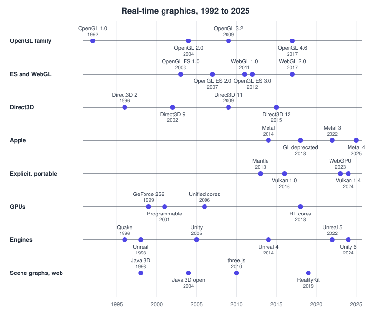
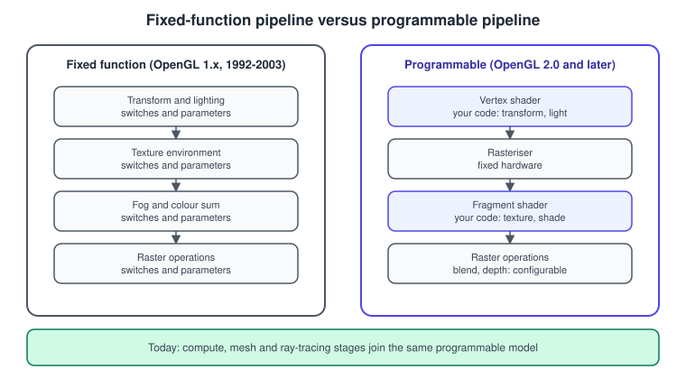
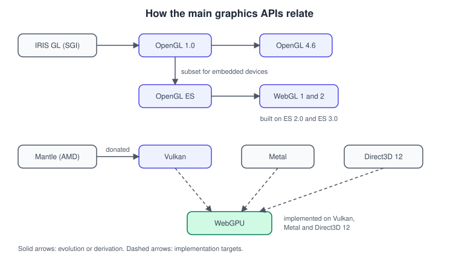

History of Real-Time Graphics
|
This content was generated with the assistance of AI and should be verified against the official documentation before being relied on in production. |
Real-time graphics APIs are shaped by the hardware of their day, by a handful of vendors and standards bodies, and by the
mistakes of the previous generation. Understanding the order in which ideas appeared explains why OpenGL has a
state machine, why Vulkan has none, why older tutorials show glBegin and why the web has two 3D APIs. This page walks
through the history from 1992 to 2025 and ends at the baseline of this section.
The facts were checked in November 2026. Dates are release or announcement years of the specification, product or operating system named. The versions at the end of the story are OpenGL 4.6, OpenGL ES 3.2, WebGL 2.0, Vulkan 1.4, Metal 4, Direct3D 12 and WebGPU (a W3C Candidate Recommendation Draft). Direct3D appears only as context; this section documents the Khronos, W3C, Apple and engine ecosystems.
A timeline

The timeline separates the lanes because the ideas spread between them: a GPU feature (programmable shading, 2001) forced an API change (GLSL, 2004), which reached phones (OpenGL ES 2.0, 2007) and browsers (WebGL, 2011), and the cost of the driver that implemented it all eventually produced Mantle, Vulkan, Metal and Direct3D 12 (2013 to 2016).
Before OpenGL: IRIS GL and workstations
In the 1980s, 3D hardware was made by workstation companies. Silicon Graphics (SGI) sold machines with a proprietary API, IRIS GL, whose model of "send primitives to a pipeline you can configure but not program" survived into everything that followed. In the early 1990s SGI turned IRIS GL into an open specification, and OpenGL 1.0 was released in 1992, governed by an Architecture Review Board (ARB) of vendors. Selman and the OpenGL SuperBible both open with this history because the design decisions of that decade (a global state machine, a fixed order of operations, immediate-mode vertex submission) are what their readers have to unlearn first.
1992 to 2003: OpenGL 1.x and the fixed-function pipeline
The first generation of OpenGL described a fixed-function pipeline. The application sent vertices, matrices, material and light parameters, and texture settings; the hardware ran a built-in transform-and-lighting recipe and a built-in texture-combining recipe, and the application could only switch options on and off. The recipe was fast but could not be changed: Gouraud-shaded Blinn-Phong with a handful of lights was the ceiling.
Notable steps in that era were vertex arrays and texture objects (OpenGL 1.1, 1997), 3D textures (1.2, 1998), multitexture and cube maps (1.3, 2001) and vertex buffer objects (1.5, 2003). The first consumer GPU with hardware transform and lighting was NVIDIA’s GeForce 256 in 1999; before that the CPU did the geometry work.
/* OpenGL 1.x fixed function: a lit, rotating book box */
glMatrixMode(GL_PROJECTION);
glLoadIdentity();
gluPerspective(60.0, aspect, 0.1, 100.0);
glMatrixMode(GL_MODELVIEW);
glLoadIdentity();
gluLookAt(0.0, 1.5, 4.0, 0.0, 0.0, 0.0, 0.0, 1.0, 0.0);
glEnable(GL_LIGHTING);
glEnable(GL_LIGHT0);
const GLfloat lamp[4] = { 2.0f, 4.0f, 3.0f, 1.0f };
const GLfloat brown[4] = { 0.7f, 0.3f, 0.1f, 1.0f };
glLightfv(GL_LIGHT0, GL_POSITION, lamp);
glMaterialfv(GL_FRONT_AND_BACK, GL_AMBIENT_AND_DIFFUSE, brown);
glRotatef(angle, 0.0f, 1.0f, 0.0f); /* spin the book */
drawBox(0.2f, 0.3f, 0.05f); /* glBegin / glNormal3f / glVertex3f */Source: OpenGL 2.1 reference: glLight.
Every call above is a state change or a data push on a hidden global object. None of it exists in the OpenGL core profile, in OpenGL ES 2.0 and later, or in any modern API.
2001 to 2008: programmable shaders
GPUs gained programmable vertex and pixel (fragment) units with NVIDIA’s GeForce 3 in 2001 and Direct3D 8. OpenGL first exposed them through vendor assembly extensions, then through the ARB extensions of 2003, and then through a C-like language, GLSL, which became part of OpenGL 2.0 in 2004. The model changed from "choose from a menu" to "write two small programs": the vertex shader runs per vertex, the fragment shader per fragment.

Unified shader hardware followed with Direct3D 10 and the GeForce 8800 (2006): the same cores ran vertex, geometry and pixel programs, and soon compute programs (NVIDIA’s CUDA, 2007; OpenCL; later OpenGL 4.3 compute shaders in 2012). OpenGL 3.0 (2008) deprecated the fixed-function path, and OpenGL 3.2 (2009) introduced the core and compatibility profiles that remain today. OpenGL 4.0 added tessellation (2010) and OpenGL 4.6 (2017) added SPIR-V support, the intermediate language shared with Vulkan. Control of the specification moved from the ARB to the Khronos Group in 2006.
A fixed-function lighting call becomes this pair of shaders in OpenGL 2.0. The language is GLSL 1.10, and the built-in
variables gl_Vertex, gl_Normal and gl_ModelViewProjectionMatrix are themselves legacy names.
// GLSL 1.10 (OpenGL 2.0, 2004): compatibility built-ins, per-fragment diffuse light
// vertex shader
varying vec3 normal;
varying vec3 lightDir;
void main() {
normal = gl_NormalMatrix * gl_Normal;
lightDir = normalize(gl_LightSource[0].position.xyz);
gl_Position = gl_ModelViewProjectionMatrix * gl_Vertex;
}
// fragment shader
varying vec3 normal;
varying vec3 lightDir;
void main() {
float d = max(dot(normalize(normal), lightDir), 0.0);
gl_FragColor = vec4(vec3(0.7, 0.3, 0.1) * d, 1.0);
}The same effect in a core-profile shader (GLSL 3.30 or 4.60) declares its own inputs, outputs and uniforms, because the built-ins above no longer exist:
// vertex shader, GLSL 4.60 core
#version 460 core
layout(location = 0) in vec3 aPosition;
layout(location = 1) in vec3 aNormal;
uniform mat4 uMvp;
uniform mat3 uNormalMatrix;
out vec3 vNormal;
void main() {
vNormal = uNormalMatrix * aNormal;
gl_Position = uMvp * vec4(aPosition, 1.0);
}
// fragment shader, GLSL 4.60 core
#version 460 core
in vec3 vNormal;
uniform vec3 uLightDir;
out vec4 fragColor;
void main() {
float d = max(dot(normalize(vNormal), uLightDir), 0.0);
fragColor = vec4(vec3(0.7, 0.3, 0.1) * d, 1.0);
}The two versions differ in wiring, not in mathematics. The wiring, called the interface between the application and the shader, is what each later API redesigned again.
2003 onward: OpenGL ES and mobile GPUs
OpenGL ES, a subset of OpenGL for embedded devices, appeared in 2003 as ES 1.0 with fixed function. OpenGL ES 2.0 (2007) was a radical cut: no fixed function at all, only shaders. It powered the first smartphone 3D (iPhone 3GS in 2009 and Android 2.2 and later) and, in effect, is the origin of the modern shader-only mindset. OpenGL ES 3.0 (2012) brought instancing, uniform buffers and transform feedback, ES 3.1 (2014) added compute shaders, and ES 3.2 (2015) added geometry and tessellation shaders and the Android Extension Pack features. OpenGL ES 3.2 is the last version of the family. Android now layers it over Vulkan through ANGLE, and Apple platforms deprecated it along with OpenGL in 2018. The Android side is covered in Graphics, Canvas and OpenGL ES on Android.
2011 onward: WebGL
WebGL 1.0 (2011) exposed OpenGL ES 2.0 to JavaScript through the HTML canvas, making hardware 3D available in every browser without a plug-in. WebGL 2.0 (2017) tracked OpenGL ES 3.0. Because WebGL is OpenGL ES with a security layer, the JavaScript code looks like native OpenGL code and shares its state-machine design. three.js, started in 2010, became the dominant framework above it. A quick WebGL 2 triangle and a three.js cube are in Browser Canvas and WebGL.
2013 to 2016: the explicit APIs
By 2012 the cost of OpenGL drivers was the problem. A driver had to track hidden state, validate each call, compile shaders on demand, and guess what the application would do next, all on a single thread. Games with thousands of draw calls were CPU-bound in the driver. The answer was a new generation of APIs that moved those decisions to the application:
-
Mantle (AMD, 2013) proved the idea on PCs. AMD donated it to Khronos in 2015, where it became the basis of Vulkan.
-
Metal (Apple, announced at WWDC in June 2014, on iOS 8) came first on Apple devices and reached macOS in 2015.
-
Direct3D 12 (Microsoft, 2015, Windows 10) brought the same model to Windows and Xbox.
-
Vulkan 1.0 (Khronos, February 2016) delivered a cross-vendor explicit API with the SPIR-V intermediate language.
All four describe the work up front in objects (pipeline state, descriptor tables, command buffers) and let the application record commands on many threads. The following Vulkan fragment shows how different the first step already is: there is no global context; the application describes itself to the loader and gets an instance.
VkApplicationInfo app = { .sType = VK_STRUCTURE_TYPE_APPLICATION_INFO,
.pApplicationName = "Bookshelf",
.applicationVersion = VK_MAKE_API_VERSION(0, 1, 0, 0),
.apiVersion = VK_API_VERSION_1_4 };
VkInstanceCreateInfo info = { .sType = VK_STRUCTURE_TYPE_INSTANCE_CREATE_INFO,
.pApplicationInfo = &app };
VkInstance instance;
VkResult result = vkCreateInstance(&info, NULL, &instance);Source: Vulkan specification: Initialization.
2018 to 2025: ray tracing, mesh shaders and the web catches up
Hardware ray tracing arrived with NVIDIA’s Turing GPUs in 2018 together with DirectX Raytracing; Vulkan ray-tracing
extensions were finalised in 2020. Mesh and task shaders, which replace the vertex-to-primitive front end, appeared on
Turing, in Vulkan as VK_EXT_mesh_shader (2022), in Metal 3 (2022) and, for OpenGL, as GL_EXT_mesh_shader in 2025. The pipeline
stages these add are described in The Rendering Pipeline.
Apple deprecated OpenGL and OpenGL ES in macOS 10.14 and iOS 12 (2018) and has continued to evolve Metal: Metal 3 (2022) and Metal 4 (2025). On the web, WebGPU, designed by a W3C group with Apple, Google, Mozilla and Microsoft, maps onto Vulkan, Metal and Direct3D 12 and shipped in Chrome and Edge 113 (May 2023), Safari 26 and Firefox 141 on Windows. In 2024 Khronos adopted Slang as a shading-language initiative, shipped with the Vulkan SDK, and Microsoft announced that Shader Model 7 of DirectX would adopt SPIR-V, narrowing the gap between the two big shading ecosystems.

A WebGPU shader is written in WGSL, a language designed for the web that sits next to GLSL, HLSL and MSL. The same Bookshelf fragment shader in WGSL is:
struct Light { direction : vec3<f32> };
@group(0) @binding(0) var<uniform> light : Light;
@fragment
fn fs_main(@location(0) normal : vec3<f32>) -> @location(0) vec4<f32> {
let d = max(dot(normalize(normal), light.direction), 0.0);
return vec4<f32>(vec3<f32>(0.7, 0.3, 0.1) * d, 1.0);
}Source: W3C: WebGPU Shading Language.
The shading-language landscape is compared in Shading Languages Landscape.
Engines and scene graphs
Engines grew in parallel with the APIs. id Software’s Quake (1996) popularised a licensable 3D engine; Epic’s Unreal (1998) made the editor part of the product; Unity (2005) targeted small teams and Apple devices first and grew into the most widely used mobile engine; Unreal Engine 4 (2014) added physically based rendering and Blueprints; Unreal Engine 5 (2022) introduced Nanite and Lumen; and Unity 6 (October 2024) moved its standard pipeline to the Universal Render Pipeline with a Render Graph. At the other end of the stack, retained-mode scene-graph libraries such as Java 3D (Sun, 1.0 in 1998, open sourced in 2004, last Sun build 1.5.2 in 2008, then continued by the JogAmp community) gave Java programmers a high-level model before engines existed on that platform. The scene-graph idea survives in RealityKit (2019), three.js and every engine’s scene hierarchy. The relationship between these layers is the subject of Graphics APIs vs Game Engines.
Patterns across the decades
-
Each generation removes a convenience and moves the cost to the application. Fixed function to shaders, then drivers to applications. Every simplification you lose is a decision you now own.
-
Hardware features reach standards in a lag of one to three years. Programmable shading (2001) became GLSL (2004); hardware ray tracing (2018) became Vulkan extensions (2020).
-
Mobile and web drive subsetting. OpenGL ES and WebGL both started as strict subsets, which is why old OpenGL knowledge only partly transfers.
-
Portability moves into layers. ANGLE, MoltenVK, Dawn and wgpu exist because no single API runs everywhere; see Cross-Platform Translation Layers.
What the books cover and where they are outdated
The OpenGL SuperBible (4th edition, 2007), chapter 1, and Selman’s Java 3D Programming, chapter 1, give historical context and the vocabulary of the pipeline. Their historical account is accurate for its time; their present-tense claims are not.
| Statement | Situation in 2026 |
|---|---|
OpenGL is the cross-platform 3D API, now at version 2.x |
OpenGL is frozen at 4.6 (2017). Vulkan is the Khronos API under active development; OpenGL is deprecated on Apple platforms. |
Fixed-function lighting and texturing as the normal way to draw |
Programmable shaders are the only model in OpenGL core profiles, OpenGL ES 2.0 and later, WebGL and every modern API. |
Applets are how Java 3D reaches users |
Applets were deprecated in JDK 9 (JEP 289) and the plug-in removed in JDK 11; Applet API deprecated for removal (JEP 398). |
Direct3D and OpenGL are the only two choices |
Vulkan 1.4, Metal 4, Direct3D 12 and WebGPU are the current explicit APIs. |
Recent changes
-
Vulkan 1.4 (December 2024) and the 2026 roadmap profile raise the baseline of required features; Khronos announced the Slang Initiative in November 2024.
-
Microsoft announced on 19 September 2024 that DirectX Shader Model 7 would adopt SPIR-V.
-
WebGPU entered the W3C Candidate Recommendation Draft stage and shipped across the major browsers between 2023 and 2025.
-
Metal 4 (2025) added a unified command encoder model and new ML-in-shader features, and Apple continues to deprecate older storage modes and Intel GPU families in the 2026 operating systems.
See it in
OpenGL: Versions, Profiles and Extensions; WebGL: WebGL Versions and Browser Support; Metal: What’s New in Metal 4; Vulkan: Vulkan Versions, Profiles and Extensions; Unity: Licensing and Pricing; Unreal Engine: Versions, Licensing and History.
References
-
W3C: WebGPU and W3C: WGSL
-
Wright, Lipchak and Haemel, OpenGL SuperBible, 4th edition (Addison-Wesley, 2007): the publisher page is listed in the section bibliography
-
Daniel Selman, Java 3D Programming (Manning, 2002): publisher page